Instructors
Ineke Luijten  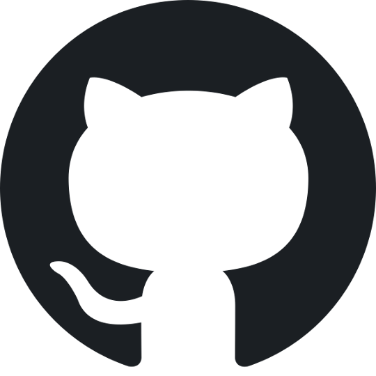
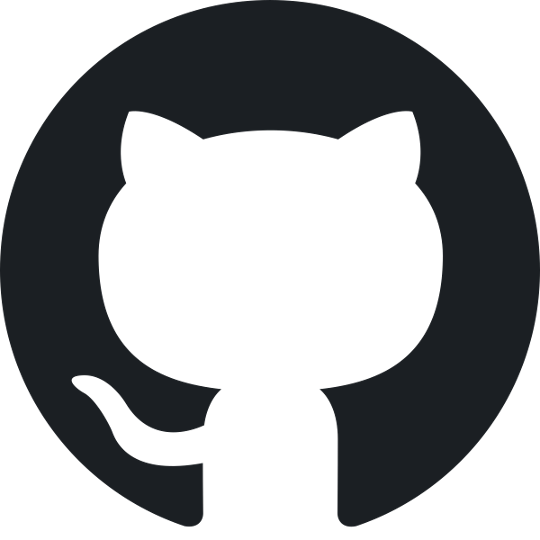
Scientific Training Officer, SciLifeLab Training Hub

|
Ineke develops and delivers cross-disciplinary training modules on Open Science and FAIR principles. She is a member of the Open Science community and a strong advocate for Open Science and FAIR. |
Elin Kronander
Head of Training and Data Steward, NBIS
| Elin leads initiatives to enhance data management and bioinformatics education. With expertise in implementing FAIR data principles, she supports researchers across Sweden’s scientific community in managing and sharing data effectively to promote open science. |
David Rayner
Training Coordinator, SND 
| 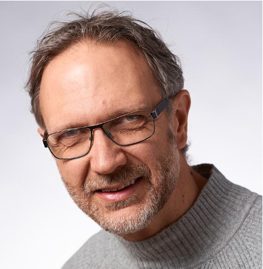 | David coordinates education ventures for the Swedish National Data service. He liaises with researchers and domain specialists to identify new functionality and training needs. |
Jessica Lindvall, PhD
Head of Training, SciLifeLab Training Hub
| 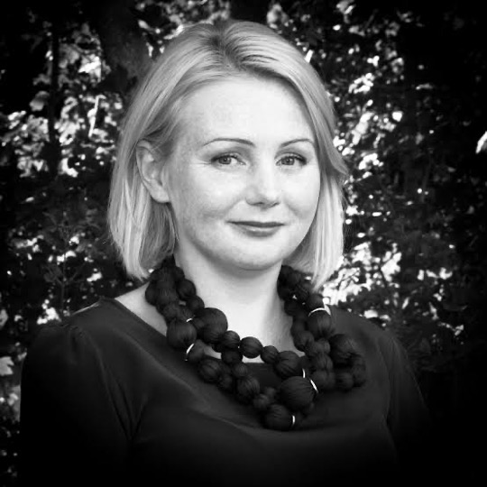 | Jessica heads the Training Hub at SciLifeLab, a national Research Infrastructure within the life science domain. She is a strong Open Science and FAIR advocate involved in various national and international Open Science and FAIR capacity building and upskilling work. |
Sabina Anderberg
Senior Advisor, SUHF & Stockholm University
| 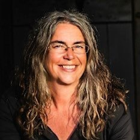 | As vice-chairman of SUHFs group on Research Data, Sabina specializes in strategically monitoring national and international developments in the field of open data. She also promotes the development and implementation of local infrastructures for open data at Swedish universities. |
Till Brückner
Postdoctoral fellow - clinical trial reporting, Karolinska Institute
| 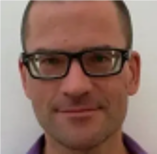 | Till focuses on improving transparency and accountability in medical research, and is the founder of TranspariMED, a project in which he campaigns for all clinical trial results to be rapidly made public, thereby ending evidence distortion in medicine. |
Jonas Åkerman
Coordinator for research ethics, Stockholm University
| 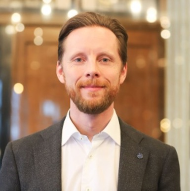 | Jonas is an expert on research ethics. He is a member of SUHFs expert group for ethical issues, and has written the first (2017) and second (2024) edition of “God forskningssed” / “Good research practices”, in collaboration with the Swedish Research council (VR). |
Abeni Wickham
Founder/CEO, SciFree
| 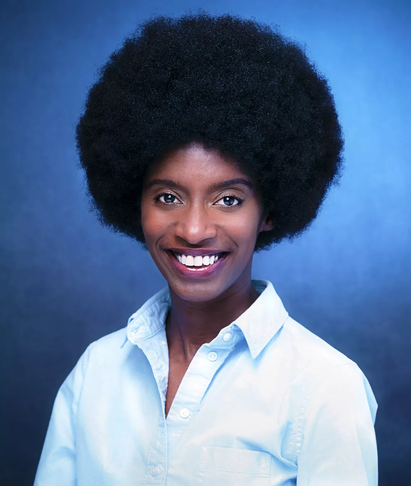 | After having completed a PhD in Molecular Physics, Abeni founded SciFree, where she develops software infrastructure tools to streamline the Open Access publishing workflow. SciFree is now serving over 60 universities worldwide. |
Sanna Isabel Ulfsparre
Analyst, Vetenskapsrådet
| 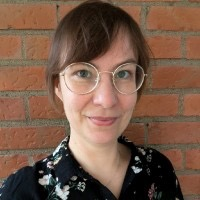 | With a background as a librarian (Umeå university) within the field of Open Science and data management, Sanna Isabel now supports the development of (inter)national structures & strategies for open and FAIR research data and the European Open Science Cloud (EOSC) at VR. |
Erik Stattin
Unit manager Research Collaboration, Kungliga Biblioteket
| As author of the “National guidelines for Open Science” (KB, 2024), Erik has extensive knowledge on the state of Open Science in Sweden. He works to make research more accessible to all and is a frequent contributor to Tidningen Curie. |
Karin Westin Tikkanen
Journalist/Senior Advisor, SND/Gothenburg University
| Karin has long experience when it comes to writing and lecturing on popular science communication. Her background is in the Humanities sector (Classical languages and Comparative Philology), but she regularly writes popular science pieces also on scientific research. She is a board member of Minerva, the section for narrative non-fiction of the Swedish Writers’ Union. |
Angeliki Adamaki
Project manager, Lund University
| 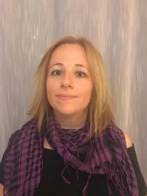 | As a member of the working group for Open Science at Lund university, Angeliki chairs the expert group Open Science champions, with which she promotes increased knowledge and awareness on open science. |
Sabina Leonelli
Professor of Philosophy and History of Science, Technical University of Munich
| 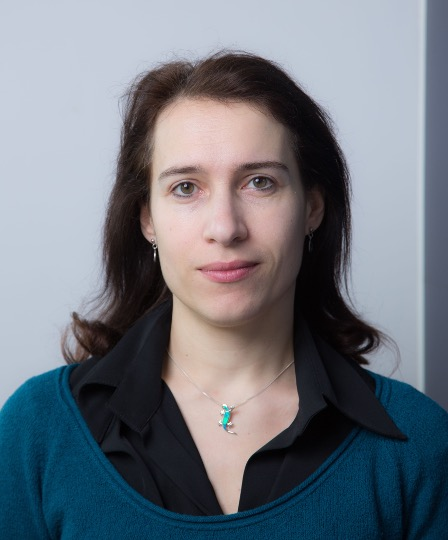 | Sabina is well known for her work on scientific practices, data-centric science, and open science policies. In her most recent book “The philosophy of Open Science” (2023), she examines the role played by Open Science principles and practices within contemporary research and how this relates to the epistemology of science. |